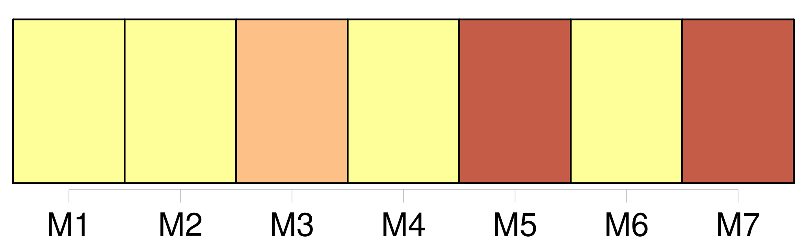

Longueur nb maillons : 286 mentions |
 |
L'un venait de la Bastille, [l'autre] du Jardin des Plantes. [1 phrases]
[Le plus petit] , [dont] le corps disparaissait dans une redingote marron, baissait la tête sous une casquette à visière pointue. [1 phrases]
Pour s'essuyer le front, ils retirèrent leurs coiffures, que chacun posa près de soi ; et [le petit homme] aperçut, écrit dans le chapeau de [son] voisin : Bouvard ; pendant que celui -ci distinguait aisément dans la casquette [du particulier en redingote] le mot : Pécuchet. [1 phrases]
— Mon Dieu, oui, on pourrait prendre le mien à [mon] bureau! [2 phrases]
L'aspect aimable de Bouvard charma de suite [Pécuchet] [3 phrases]
L'air sérieux de [Pécuchet] frappa Bouvard. On aurait dit qu' [il] portait une perruque, tant les mèches garnissant [son] crâne élevé étaient plates et noires. [Sa] figure semblait toute en profil, à cause du nez qui descendait très bas.
[Ses] jambes, prises dans des tuyaux de lasting, manquaient de proportion avec la longueur du buste, et [il] avait une voix forte, caverneuse.
Cette exclamation [lui] échappa : [1 phrases] [Pécuchet] pensait de même.
[Il] commençait néanmoins à se sentir fatigué de la capitale, Bouvard aussi. [3 phrases]
Décidément ( et [Pécuchet] en était surpris ) on avait encore plus chaud dans les rues que chez soi! Bouvard [l'] engagea à mettre bas [sa] redingote. [6 phrases]
Bref, il valait mieux vivre sans elles ; aussi [Pécuchet] était resté célibataire. [6 phrases]
[Pécuchet] devint très rouge, et sans doute pour s'éviter de répondre, lui désigna du regard un prêtre qui s'avançait. [1 phrases]
[Pécuchet] , sans les absoudre, montra quelque déférence pour la religion. [10 phrases] — [J'] en avais l'idée!!
reprit [Pécuchet] , mais [je] n'osais pas vous le proposer!
Et [il] se laissa conduire en face de l'Hôtel de Ville, dans un petit restaurant où l'on serait bien. [1 phrases] [Pécuchet] avait peur des épices comme pouvant [lui] incendier le corps. [4 phrases] Hélas, le gagne-pain l'absorbait ; et ils levèrent les bras d'étonnement, ils faillirent s'embrasser par-dessus la table en découvrant qu'ils étaient tous les deux copistes, Bouvard dans une maison de commerce, [Pécuchet] au ministère de la marine ; ce qui ne [l'] empêchait pas de consacrer, chaque soir, quelques moments à l'étude.
[Il] avait noté des fautes dans l'ouvrage de M. Thiers, et [il] parla avec le plus grand respect d'un certain Dumouchel, professeur. [1 phrases] Sa chaîne de montre en cheveux et la manière dont il battait la rémolade décelaient le roquentin plein d'expérience, et il mangeait, le coin de la serviette dans l'aisselle, en débitant des choses qui faisaient rire [Pécuchet] [3 phrases] [Pécuchet] , en contemplant les becs de gaz, gémit sur le débordement du luxe, puis, d'un geste dédaigneux, [écarta] les journaux. [5 phrases]
[Pécuchet] eut une querelle avec lui ; le limonadier survint, il n'écouta pas [ses] excuses et même chicana sur la consommation.
[Il] proposa ensuite de terminer la soirée paisiblement dans [son] domicile, qui était tout près, rue Saint-Martin.
À peine entré, [il] endossa une manière de camisole en indienne et [fit] les honneurs de [son] appartement. [6 phrases]
s'écria [Pécuchet] , [qui] redoutait, en plus, les courants d'air.
Cependant [il] haletait dans cette petite chambre, chauffée depuis le matin par les ardoises de la toiture.
Bouvard [lui] dit : [1 phrases]
Et [Pécuchet] baissa la tête, s'effrayant à l'hypothèse de ne plus avoir [son] gilet de santé.
— Faites -moi la conduite, reprit Bouvard, l'air extérieur [vous] rafraîchira.
Enfin [Pécuchet] repassa [ses] bottes en grommelant :
Et malgré la distance, [il] l'accompagna jusque chez lui, au coin de la rue de Béthune, en face le pont de la Tournelle. [9 phrases]
[Pécuchet] ne put s'empêcher de dire : [1 phrases] Ceux de [Pécuchet] étaient Juste-Romain-Cyrille, — et ils avaient le même âge : quarante-sept ans. [6 phrases]
[Pécuchet] descendit les marches sans répondre à la gaudriole. [2 phrases]
Celui -ci passa la tête par les carreaux et reconnut [Pécuchet] [qui] articula plus fort :
[Je] l'ai retirée! [2 phrases]
dit [Pécuchet] , en désignant [sa] poitrine. Tous les propos de la journée, avec la température de l'appartement et les labeurs de la digestion, [l'] avaient empêché de dormir, si bien que, n'y tenant plus, [il] avait rejeté loin de [lui] [sa] flanelle.
Le matin, [il] s'était rappelé [son] action, heureusement sans conséquence, et [il] venait en instruire Bouvard, qui, par là, fut placé dans [son] estime à une prodigieuse hauteur. [Il] était [le fils d'un petit marchand] et n' [avait] pas connu [sa] mère, morte très jeune. On [l'] avait, à quinze ans, retiré de pension pour [le] mettre chez un huissier. Les gendarmes y survinrent, et le patron fut envoyé aux galères ; histoire farouche qui [lui] causait encore de l'épouvante. Ensuite, [il] avait essayé de plusieurs états : élève en pharmacie, maître d'études, comptable sur un des paquebots de la haute Seine. Enfin, un chef de division, séduit par [son] écriture, [l'] avait engagé comme expéditionnaire ; mais la conscience d'une instruction défectueuse, avec les besoins d'esprit qu'elle [lui] donnait, irritaient [son] humeur ; et [il] vivait complètement seul, sans parents, sans maîtresse.
[Sa] distraction était, le dimanche, d'inspecter les travaux publics. [17 phrases] Bouvard marchait à grandes enjambées, tandis que [Pécuchet] , multipliant les pas, avec [sa] redingote qui [lui] battait les talons, semblait glisser sur des roulettes. [2 phrases] [Pécuchet] prisait, ne [mangeait] au dessert que des confitures et [trempait] un morceau de sucre dans le café.
L'un était confiant, étourdi, généreux ; [l'autre] discret, méditatif, économe. Pour [lui] être agréable, Bouvard voulut faire à [Pécuchet] la connaissance de Barberou. [1 phrases] [Pécuchet] le trouva déplaisant et [il] conduisit Bouvard chez Dumouchel. [35 phrases]
[Pécuchet] contracta la brusquerie de Bouvard, Bouvard prit quelque chose de la morosité de [Pécuchet] [19 phrases]
Il fit demander [Pécuchet]
[Pécuchet] parut. [8 phrases] » [Pécuchet] fut obligé de s'asseoir sur une borne dans la cour.
Puis [il] rendit le papier en disant lentement : [2 phrases] — [Tu] crois que c'est une farce!! [5 phrases]
Il donna à [Pécuchet] des coups de poing dans le dos, et pendant cinq minutes, déraisonna complètement. [18 phrases]
Et [Pécuchet] , [dont] la tête pourtant était plus forte, n'en revenait pas. [7 phrases] Et ce mot qui liait [son ami] à son bonheur, [Pécuchet] l'avait trouvé tout simple. [1 phrases] Mais comme [il] ne pouvait point vivre aux crochets de Bouvard, [il] ne partirait pas avant [sa] retraite. [1 phrases]
[Il] demeura inflexible et la chose fut décidée. [21 phrases]
— D'ailleurs [j'] ai la mienne, disait [Pécuchet] [1 phrases]
Bouvard emporterait ses meubles, [Pécuchet] [sa] grande table noire ; on tirerait parmi des rideaux et avec un peu de batterie de cuisine ce serait bien suffisant. [3 phrases]
[Pécuchet] , juché sur un grand tabouret de paille, soignait toujours les jambages de [sa] longue écriture, mais en gonflant les narines, [pinçait] les lèvres, comme s' [il] avait peur de lâcher [son] secret. [11 phrases] [Pécuchet] combattit son entêtement, le [pria] de céder, enfin [déclara] qu' [il] complèterait le surplus. C'était toute [sa] fortune, provenant du patrimoine de [sa] mère et de [ses] économies.
Jamais [il] n'en avait soufflé mot, réservant ce capital pour une grande occasion.
Tout fut payé vers la fin de 1840, six mois avant [sa] retraite. [3 phrases]
[Pécuchet] , au contraire, fut maussade pour [ses] collègues, et [sortit] , le dernier jour, en claquant la porte brutalement.
[Il] avait à surveiller les emballages, faire un tas de commissions, d'emplettes encore, et prendre congé de Dumouchel!
Le professeur [lui] proposa un commerce épistolaire, où il [le] tiendrait au courant de la littérature ; et après des félicitations nouvelles, [lui] souhaita une bonne santé. [5 phrases] [Pécuchet] , jusqu'à deux heures du matin, se promena dans [sa] chambre. [Il] ne reviendrait plus là ; tant mieux!!
et cependant, pour laisser quelque chose de [lui] , [il] grava [son] nom sur le plâtre de la cheminée. [3 phrases]
[Pécuchet] voulut l'accompagner.
[Il] s'installa auprès du conducteur, sur la banquette, et, couvert de [sa] plus vieille redingote, avec un cache-nez, des mitaines et [sa] chancelière de bureau, le dimanche 20 mars, au petit jour, [il] sortit de la capitale. Le mouvement et la nouveauté du voyage [l'] occupèrent les premières heures. [1 phrases]
Ils choisissaient d'exécrables auberges, et, bien qu'ils répondissent de tout, [Pécuchet] , par excès de prudence, couchait dans les mêmes gîtes. [4 phrases] [Pécuchet] baissait la figure sous [sa] casquette, et chaque fois qu' [il] ouvrait [sa] tabatière, il [lui] fallait, pour garantir [ses] yeux, se retourner complètement. Pendant les cahots, [il] entendait osciller derrière [lui] tout [son] bagage et [prodiguait] les recommandations. Voyant qu'elles ne servaient à rien, [il] changea de tactique ; [il] fit le bon enfant, [eut] des complaisances ; dans les montées pénibles, [il] poussait à la roue avec les hommes ; [il] en vint jusqu'à leur payer le gloria après les repas. [1 phrases] [Pécuchet] visita tout de suite l'intérieur ; les tasses de porcelaine gisaient en morceaux.
[Il] leva les bras, en grinçant des dents, [maudit] ces deux imbéciles ; et la journée suivante fut perdue à cause du charretier qui se grisa ; mais [il] n'eut pas la force de se plaindre, la coupe d'amertume étant remplie. [5 phrases] À Falaise, le neuvième jour de [son] voyage, [Pécuchet] prit un cheval de renfort, et jusqu'au coucher du soleil on marcha bien. Au delà de Bretteville, ayant quitté la grand'route, [il] s'engagea dans un chemin de traverse, croyant voir à chaque minute le pignon de Chavignolles. [3 phrases] [Pécuchet] abandonna le chariot, et, pataugeant dans la boue, [s'avança] devant [lui] à la découverte. Quand [il] approchait des fermes, les chiens aboyaient. [Il] criait de toutes [ses] forces pour demander [sa] route. [1 phrases] [Il] avait peur et [regagnait] le large. [1 phrases] [Il] aperçut un cabriolet, [s'élança] pour le rejoindre. [20 phrases] Bien qu'il fût minuit, [Pécuchet] eut l'idée de faire un tour dans le jardin. [6 phrases] [Pécuchet] tâcha de découvrir des bourgeons. [8 phrases]
Déshabillés et dans leur lit, ils bavardèrent quelque temps, puis s'endormirent, Bouvard sur le dos, la bouche ouverte, tête nue ; [Pécuchet] sur le flanc droit, les genoux au ventre, affublé d'un bonnet de coton, et tous les deux ronflaient sous le clair de la lune, qui entrait par les fenêtres. [1 phrases] Bouvard fuma une pipe et [Pécuchet] huma une prise, qu'ils déclarèrent la meilleure de leur existence. [31 phrases] [Pécuchet] en prit une pour [ses] collections ; la dernière fut destinée à la bibliothèque ; et comme ils ouvraient les armoires, ils trouvèrent d'autres bouquins, mais n'eurent pas la fantaisie d'en lire les titres. [10 phrases] Pour se garantir du soleil, Bouvard portait sur la tête un mouchoir noué en turban, [Pécuchet] [sa] casquette ; et [il] avait un grand tablier avec une poche par devant, dans laquelle ballotaient un sécateur, [son] foulard et [sa] tabatière. [5 phrases] [Pécuchet] fit creuser devant la cuisine un large trou, et le [disposa] en trois compartiments, où [il] fabriquerait des composts qui feraient pousser un tas de choses dont les détritus amèneraient d'autres récoltes procurant d'autres engrais, tout cela indéfiniment, et [il] rêvait au bord de la fosse, apercevant dans l'avenir des montagnes de fruits, des débordements de fleurs, des avalanches de légumes. Mais le fumier de cheval si utile pour les couches [lui] manquait. [1 phrases]
Enfin, après beaucoup de recherches, malgré les instances de Bouvard, et abjurant toute pudeur, [il] prit le parti « d'aller [lui -même] au crottin! ». C'est au milieu de cette occupation que Mme Bordin, un jour, [l'] accosta sur la grande route. Quand elle [l'] eut complimenté, elle s'informa de [son] ami. Les yeux noirs de cette personne, très brillants bien que petits, ses hautes couleurs, son aplomb ( elle avait même un peu de moustache ), intimidèrent [Pécuchet] [Il] répondit brièvement et [tourna] le dos. [35 phrases]
Bouvard et [Pécuchet] reprirent ensemble : [18 phrases]
Le régisseur aida Bouvard et [Pécuchet] à franchir un échalier, et ils traversèrent deux masures, où des vaches ruminaient sous les pommiers. [40 phrases]
C'était Bouvard qui fouettait le cheval et [Pécuchet] , monté dans l'auge, retournait le marc avec une pelle. [17 phrases]
[Pécuchet] en surprit un, et [s'écria] , en le poussant dehors par les épaules : [1 phrases] [Sa] personne n'inspirait aucun respect. D'ailleurs, [il] avait des remords à l'encontre du jardin. Tout [son] temps ne serait pas de trop pour le tenir en bon état. [3 phrases] [Pécuchet] en fit construire une en briques.
[Il] peignit [lui -même] les châssis, et redoutant les coups de soleil [barbouilla] de craie toutes les cloches. [Il] eut la précaution pour les boutures d'enlever les têtes avec les feuilles. Ensuite, [il] s'appliqua aux marcottages. [Il] essaya plusieurs sortes de greffes, greffes en flûte, en couronne, en écusson, greffe herbacée, greffe anglaise. Avec quel soin [il] ajustait les deux libers!! comme [il] serrait les ligatures!! [1 phrases] Deux fois par jour, [il] prenait [son] arrosoir et le [balançait] sur les plantes, comme s'il les eût encensées. À mesure qu'elles verdissaient sous l'eau qui tombait en pluie fine, il [lui] semblait se désaltérer et renaître avec elles.
Puis, cédant à une ivresse, [il] arrachait la pomme de l'arrosoir et [versait] à plein goulot, copieusement. [1 phrases] [Pécuchet] y enfermait [ses] instruments, et [il] passait là des heures délicieuses à éplucher les graines, à écrire les étiquettes, à mettre en ordre [ses] petits pots.
Pour se reposer, [il] s'asseyait devant la porte, sur une caisse, et alors [projetait] des embellissements.
[Il] avait créé au bas du perron deux corbeilles de géraniums ; entre les cyprès et les quenouilles, [il] planta des tournesols ; et comme les plates-bandes étaient couvertes de boutons d'or, et toutes les allées de sable neuf, le jardin éblouissait par une abondance de couleurs jaunes. [4 phrases] Il manqua les brocolis, les aubergines, les navets, et du cresson de fontaine, qu' [il] avait voulu élever dans un baquet. [1 phrases] Les choux [le] consolèrent. Un, surtout, [lui] donna des espérances. [1 phrases]
N'importe, [Pécuchet] fut content de posséder un monstre.
Alors [il] tenta ce qui [lui] semblait être le summum de l'art : l'élève du melon. [Il] sema les graines de plusieurs variétés dans des assiettes remplies de terreau, qu' [il] enfouit dans [sa] couche. Puis [il] dressa une autre couche ; et quand elle eut jeté son feu, [repiqua] les plants les plus beaux, avec des cloches par-dessus. [Il] fit toutes les tailles suivant les préceptes du bon jardinier, [respecta] les fleurs, [laissa] se nouer les fruits, en [choisit] un sur chaque bras, [supprima] les autres, et dès qu'ils eurent la grosseur d'une noix, [il] glissa sous leur écorce une planchette pour les empêcher de pourrir au contact du crottin.
[Il] les bassinait, les [aérait] , [enlevait] avec [son] mouchoir la brume des cloches, et si des nuages paraissaient, [il] apportait vivement des paillassons. La nuit, [il] n'en dormait plus.
Plusieurs fois même [il] se releva ; et pieds nus dans [ses] bottes, en chemise, grelottant, [il] traversait tout le jardin pour aller mettre sur les bâches la couverture de [son] lit. [2 phrases]
Le second ne fut pas meilleur, le troisième non plus ; [Pécuchet] trouvait pour chacun une excuse nouvelle, jusqu'au dernier qu' [il] jeta par la fenêtre, déclarant n'y rien comprendre.
En effet, comme [il] avait cultivé les unes près des autres des espèces différentes, les sucrins s'étaient confondus avec les maraîchers, le gros Portugal avec le grand Mongol, et le voisinage des pommes d'amour complétant l'anarchie, il en était résulté d'abominables mulets qui avaient le goût de citrouille. Alors [Pécuchet] se tourna vers les fleurs.
[Il] écrivit à Dumouchel pour avoir des arbustes avec des graines, [acheta] une provision de terre de bruyère, et [se mit] à l'œuvre résolument.
Mais [il] planta des passiflores à l'ombre, des pensées au soleil, [couvrit] de fumier les jacinthes, [arrosa] les lis après leur floraison, [détruisit] les rhododendrons par des excès de rabatage, [stimula] les fuchsias avec de la colle forte, et [rôtit] un grenadier, en l'exposant au feu de la cuisine.
Aux approches du froid, [il] abrita les églantiers sous des dômes de papiers forts enduits de chandelle : cela faisait comme des pains de sucre tenus en l'air par des bâtons. [1 phrases] Cependant, puisque les arbres les plus rares prospèrent dans les jardins de la capitale, ils devaient réussir à Chavignolles ; et [Pécuchet] se procura le lilas des Indes, la rose de Chine et l'eucalyptus, alors dans la primeur de sa réputation. Toutes [ses] expériences ratèrent.
[Il] était chaque fois fort étonné. Bouvard, comme [lui] , rencontrait des obstacles. [16 phrases] Excité par [Pécuchet] , il eut le délire de l'engrais. |

|
Il est possible de télécharger la ressource sur la page Ortolang |
Si vous avez des questions ou vous voyez des erreurs, merci d'envoyer un mail à silvia.federzoni89@gmail.com |